Early 1940's—Ladies' Garment Cutting and Making
by
F. R. Morris
Chapter III—Construction of Patterns for Short Coats
THE following diagrams and text form the basis of the system. All standard arrangements of seams are dealt with, and the systems described are applicable to style variations as they are encountered.
The variations for figure attitude and disproportionate shape are the general basis of alterations and can be equally applied to all diagrams, though, for the sake of simplicity, they are applied to one style of coat only.
Seams are allowed round the scye and shoulders and on the underseams, for in the author's experience it is more advisable to allow seams on all panels and extra seamings when cutting from the material. The system is simplified when there is a standard allowance over the bust size, no matter whether the design has two seams or twenty-two. It is impossible to allow seams when the design has horizontal lines in addition to vertical ones.
We will now proceed with the preliminary constructional lines and points for the draft of a lady's short coat.
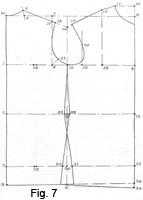The Basic Draft (Fig. 7)
The system is based upon the following measures—
- Bust = 34 inches.
- Waist = 27 inches. An addition of 2 inches is made to the tight waist measure for ease.
- Hips = 38 inches. This is a proportionate increase of 4 inches over the bust size.
- Waist length =15 inches.
- Full length = 24 inches.
- Half-back width = 6½ inches.
- Normal height = 5 feet.
- Working scale = half the bust size =17 inches.
To draft—
Commence by drawing line X to X, the full length of coat.
- 1 from X = the depth of scye = one-third of the scale plus 1¾ inches.
- 2 from X = the natural waist length = 15 inches.
- 3 from 2 = 8 inches down for the hip level.
- 4 from X = the back neck width = one-sixth of the scale less ¼ inch = 2½ inches.
- 5 from 4 = 1 inch always.
- 6 from 1 = the half-back width plus ¼ inch = 6¾ inches.
- Square out from all the points from X to X as shown.
- Square a line upwards from 6 to 7.
- 8 from 1 = the half-bust measure plus 2 inches for ease and seams.
- Square up and down from this point.
- 9 from 8 = the depth of the scye from X to 1 on the back.
- 10 from 9 = the increase of front balance to agree with the additional contour length necessary, namely, one-twelfth of the scale = 1 3/8 inches.
- 11 from 10 = the location of the front neck point = one-sixth of the scale = 2¾ inches.
- 12 from 8 = the front of scye or across-chest measure = half the scale less ¾ inch = 7¾ inches.
- 13 from 12 = the location of the neck point that provides contour shape for the bust prominence.
- Square up from 13 to 14 equal to ½ inch less than 8 to 10.
- Join 14 to 11; this amount is taken out of the bust dart to provide contour capacity for the bust shape.
- The position of the sideseam is located midway of the scye at 15.
- Square up and down from 15.
- 16 from 15 for the angle of the shoulder slope is one-third of the scale plus ¼ inch = 6 inches.
- Line from 16 to 5 and 14.
- 17 is located on the line squared up from 6 and intersected by line 16 to 5.
- 18 from 17 = ½ inch.
- 19 from 14 = the front shoulder width equal to the back shoulder 5 to 18 less ½ inch.
The necessity for cutting the front shoulder ½ inch less than the back is explained by the fact that a badly-fitting shoulder will result if the back shoulder is not eased on to the front shoulder by this amount. The reason for this manipulation is that approximately 2 inches back from the centre of the shoulder is the curve of the shoulder-blade prominence which requires more length to cover than the hollow of the shoulder on top. Therefore, if the extra length is not infused into the shoulder seam and pressed back over the blade, then the blade prominence will take the extra length it needs and drag up the shoulder with it, causing a number of diagonal creases to appear in the front shoulder.
Easing on the back shoulder to the front gives the extra length at the blade prominence and also improves the fit of the front shoulder. It might be added that nine out of every ten badly-fitting shoulders are caused by insufficient back shoulder being eased on. It is a common occurrence for cutters to meet with drags and creases in the front shoulder, and to alter, rip the shoulders and repin into position. But this would be unnecessary in the majority of instances if sufficient length had been eased on.
The tailor is to blame to an equal degree. The author is familiar with the cutter who allows ¼ inch for easing on, and gives the job to the tailor who promptly proceeds to stretch the front shoulder by anything up to ¾ inch! The tailor thereby has ½ inch of front shoulder to ease on to the back shoulder!
The author does not believe in stretching the front shoulder; that is an out-of-date practice to counteract the mistake of the cutter. The easing on of the back shoulder gives the hollow front shoulder effect that formerly the tailor endeavoured to obtain by stretching.
To continue with the draft after this digression—
- In order to shape the scye, 20 from 12 = one-sixth of scale.
This is a check measure for the scye run, and it must be stressed that the good cutter should endeavour to achieve a clear run without such automatic aids.
- 21 from 6 = 1¼ inches. Complete the shape of the scye as shown.
- 22, 23, and 24 are squared down from 8.
- Square down from 15 to 25 and 26, 27.
- The quantity of hip overlap at 26 is governed by the hip size and the additional amount required for seams and ease. Two inches over the bust size are allowed for seams and ease, of which ½ inch will be lost under the blade at 28, which will be explained later. This leaves 1 ½ inches for seams and ease.
- Now on the hip overlap, ¾ inch of ease plus two seams is ample for a modern coat; so at 26 we must overlap half the difference between the bust and hip measures less ½ inch. The author calculates this quantity as follows—
- From 1 to 8 = half the bust measure plus two inches. Therefore, if we add the hip surplus at 26, we would have half the hip size plus 2 inches. But as we want only 1¼ inches over the hip measure for ease and seams, the amount at 26 is reduced by ½ inch, and ¼ inch is also taken out at a point approximately at 29. The total reduction is therefore ¾ inch.
- The 1½ inches of surplus at 26 is added equally at 30 and 31.
- The waist is suppressed 3/8 inch at 32 and 33.
This amount is standard for all coats, and the reason for this quantity is explained logically in the chapter on Waist Suppression.
- Join 15 to 32 and 31.
- Join 15 to 33 and 30.
- Lower the bottom edge ¾ inch from 24 to 34 to compensate for the working-up of the fronts, and join to 27.
The basis draft of the system is completed.
Waist suppression will be dealt with in the following draft with improved run of seams.
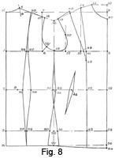Panel Back Basis Draft (Fig. 8)
The panelled coat is the most perfect example of fitting quality, and shows the application of cutting principles to the finest degree of exactitude.
With this style arrangement of seams, waist suppression and hip overlap are in their fundamentally correct locations, and all other variations of style seams are a compromise with the positions of seamings as shown with this style.
The measures and working scale are identical with those of the previous draft.
To draft—
- Commence by drawing line X to X, the full length of the coat.
- 1 from X = the depth of the scye = one-third of scale plus 1¾ inches.
- 2 from X = the natural waist length =15 inches.
- 3 from 2 = 8 inches down for the hip level.
- 4 from X = the back neck width = one-sixth of the scale less ¼ inch = 2½ inches.
- 5 from 4 = 1 inch always.
- 6 from 1 = the width of the half-back measure plus ¼ inch = 6¾ inches.
- Square out from all the points from X to X as shown.
- Square a line upwards from 6 to 7.
- 8 from 1 = the half-bust measure plus 2 inches for seams and ease.
- Square up and down from this point.
- 9 from 8 = the depth of the scye from X to 1 on the back.
- 10 from 9 = the increase of front balance necessary to agree with the additional contour length, namely, one-twelfth of scale = 1 3/8 inches.
- 11 from 10 is the location of the front neck point = one-sixth of scale = 2¾ inches.
- 12 from 8 = the front of scye or across-chest measure = half the scale less ¾ inch = 7¾ inches.
- 13 from 12 = the location of the neck point that provides contour shape for the bust prominence.
- Square up to 14 equal to ½ inch less than 8 to 10.
- Join 14 to 11. This amount is taken out of the bust dart to provide contour capacity for the bust shape.
- The position of the sideseam is located midway of the scye at 15.
- Square up and down from 15.
- 16 from 15 for the angle of the shoulder slope is one-third of the scale plus ¼ inch = 6 inches.
- Line from 16 to 5 and 14.
- 17 is located on the line squared up from 6 and intersected by line 16 to 5.
- 18 from 17 = ½ inch.
- 19 from 14 = the front shoulder width equal to the back shoulder width, 5 to 18, less ½ inch.
- 20 from 12 = one-sixth of the scale = 2¾ inches.
- 21 from 6 = 1¼ inches.
- Complete the shape of the scye as indicated on the diagram.
- 22, 23 and 24 are squared down from 8.
- Square down from 15 to 25, 26, and 27.
- The hip overlap at 26 = half the difference between the bust and hip measures less ½ inch, as described, added equally at 30 and 31.
- The waist is suppressed 3/8 inch at 32 and 33.
- Join 15 to 32 and 31, and to 33 and 30.
- Lower the bottom edge run from 24 to 34 to compensate for the working-up of the fronts and join to the end of the front sideseam.
- Points 1 to 34 are identical with those in Fig. 7.
We have now to apportion the waist suppression in its proper location and position.
The quantity of waist suppression shown on the draft represents the standard amount for a proportionate figure with a 34-inch bust, a 27-inch waist, and 38 inches round the hips.
The back-waist measure on the average woman is approximately 2 inches smaller from sideseam to sideseam than the front; therefore, the greater amount of suppression must be taken from the hollow of the back waist. Two-thirds of the surplus is taken from the back, and one-third from the front waist.
On the draft, however, we have fixed the under-seam suppression of ¾ inch as standard, so this quantity must be added to the allowances for ease and seams over the half-waist measure before the amount for back and front suppression can be estimated.
For ease and seams 2 inches are allowed over the half-waist measure, and, to obtain the required amount of back and front suppression, measure back from the centre line at 22 to B the half-waist measure plus 2 inches, and the addition of the underarm suppression of ¾ inch, totalling 2¾ inches in all. Therefore, as 22 to 2 equals the half-bust measure plus 2 inches the difference from 2 to B equals 2¾ inches.
- Half the bust measure plus 2 inches = 19 inches.
- Half the waist measure plus 2¾ inches = 16¼ inches.
- Difference = 2¾ inches.
Of this amount, two-thirds, approximately 1¾ inches, have to be placed at the back waist and one-third, approximately 1 inch, at the front waist, thus making the total suppression equal to 2¾ inches.
For the sake of an example and to apply the principle of allocating the quantity of waist suppression to a figure of less proportionate development, let us take a figure type with less difference between bust and waist, i.e. with a 44-inch bust and a 40-inch waist, assuming, of course, that the figure shows a proportionate increase of 4 inches between the bust and hip measures. Therefore, applying the same principles—
- Half the bust measure plus 2 inches = 24 inches.
- Half the waist measure plus 2¾ inches = 22¾ inches.
- Difference = 1¼ inches.
- Two-thirds of 1¼ inches = ¾ inch approximately.
- One-third of 1¼ inches = ½ inch approximately.
- Total suppression =1¼ inches.
The back panel receives ¾ inch and the front panel or dart ½ inch.
For the reverse type of figure, let us take as an example a woman of very slender proportions having a 33-inch bust, with an extremely small waist of 23 inches. Calculate in the same way as described—
- Half the bust measure plus 2 inches = 18½ inches.
- Half the waist measure plus 2¾ inches = 14¼ inches.
- Difference = 4¼ inches.
- Two-thirds of 4¼ inches = 2¾ inches.
- One-third of 4¼ inches = 1½ inches.
But very few cutters would care to suppress a coat by this amount; in any case, a woman of these measurements does not usually care to be too closely fitted in the waist for fear of accentuating the comparative largeness of the hips.
We can safely add ¾ inch to the allowance for ease over the half-waist measure, making this quantity 3½ inches instead of the normal 2¾ inches.
The amended suppression calculation will now be—
- Half the bust measure plus 2 inches = 18½ inches.
- Half the waist measure plus 3½ inches = 15 inches.
- Difference = 3½ inches.
- Two-thirds of 3½ inches = 2¼ inches.
- One-third of 3½ inches = 1¼ inches.
The back panel therefore takes 2¼ inches of suppression and the front panel or dart 1¼ inches.
It may be added that with figures of this build, the hip factor is invariably less than the proportionate 4 inches of difference; on the woman whose measurements are enumerated above the hip size was only a bare 35 inches, instead of the usual 37 inches. Therefore, the increased amount taken from the suppressions is not so excessive comparatively as might be first thought.
An extra sidebody would be an advantage when dealing with a figure of these measurements, to distribute the waist suppression more evenly.
To continue with the draft, we have decided that the back panel takes 1¾ inches of waist suppression and the front panel 1 inch.
To shape the back panel seams—
- 28 from 1 = one-sixth of the scale plus 1 inch.
- 35 from 2 = one-sixth of the scale plus ½ inch.
- 29 from 3 = one-sixth of the scale plus ¾ inch.
- 36 from 35 = the back waist suppression = 1¾ inches.
- 37 from 28 = ½ inch, as described in the text of the basis draft.
- 38 from 29 = ¼ inch. This has also been mentioned in the description of the basis draft.
- 39 from 5 = 2½ inches, or 14 to 11 plus ¼ inch.
- Suppress at this point ¼ inch for blade contour provision.
- Shape the back panel seam as shown on the diagram.
- No seams are allowed on the back and front panels, as the author prefers to add these when cutting to save confusing the student by adding varying quantities over the bust size for extra or fewer seams.
- 42 from 22 = 3¾ inch or one-sixth of the scale plus 1 inch.
- 40 from 14 = the bust dart provision 14 to 11 located by sweeping from 41, a point midway of 8 to 12.
- 43 from 23 = 4 inches or one-sixth of the scale plus 1 inch.
- 44 from 41 = the difference between one-fourth of the bust size and one-fourth of the actual measure chest.
- Shape the run of the bust dart to 45, 1½ inches below 41, keeping
the line 44 to 40 slightly hollowed so that, when the seam sews to 14 and
45, a certain amount of length is given for the prominence of the shoulder
bone in front.
- The 1 inch of front suppression is taken out diagonally in the dart at 46, which point is located at one-third of 25 to 22.
- The author prefers the dart to run diagonally as shown, for the contour shape made is then forced over the bust and hip-point prominences.
- 47 from 10 = one-sixth of the scale. Shape to 11, as shown, for the neck curve.
This completes the base model for panel coats. As this system in its entirety is the standard with which all the variations of seam placement are compared, it is essential to have complete familiarity with and mastery of the constructional points.
It is worthy of mention that the placement and widths of the panel seams are not standardized, but are subject to variation; the measurements allocated to them in the draft are those of good style and line.
Good style and line are of paramount importance in the cutting and designing of ladies' garments. There are no standardized rules of style and line to follow when drafting a pattern except the knowledge conveyed through one's own eye and feeling for line. If a woman is of large proportions, the widths and dimensions of the design should not increase proportionately to the increase in the figure size; otherwise we would only be making a copy of the wearer's form instead of endeavouring by the judicious placement of seams to convey an optical illusion of a slimmer build.
On the other hand, a slender figure with narrow shoulders may have the appearance of breadth conveyed by the wider spacing of seams at the shoulders, tapering to a narrower width at the hip line. Definite rulings cannot be laid down, and only the guidance of good taste and artistic proportion can be relied upon.
Always when we endeavour to clothe the human figure, we should try to improve on Nature's little deformities and inexactitudes if possible, by our cutting skill and artistic perception. It is to ladies' garment cutting that the "art of cutting" is most applicable. A man may master a system, calculate to the nearest fraction of an inch, and produce a perfectly fitting garment. Yet the finished article lacks a certain "something," that is line and style, and the garment on the wearer is "dead" and lifeless, instead of moulding the form of the figure into harmonious lines. The fault is that the seam runs are probably at variance with the shape and construction of the figure. Line can only be achieved by a study of the shape and form of a woman's figure, and then by our perception endeavour to transpose to the pattern draft this same shape, making our seam runs accentuate one part or minimize and disguise another. Courage and imagination are necessary to diverge from the lines laid down by the foundation draft; it must be understood that the system is the slave of man and not the master. We use the basis system as we will, or, if necessary, cast it totally aside. The system-bound cutter, who never thinks apart from the lines and dimensions laid down in the system, will not advance far, from the artistic viewpoint; his mental outlook is in proportion to the rigidity and limitations of the system he uses.
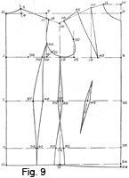Sidebody Coat Basis Draft (Fig. 9)
The base model of the sidebody coat is the next in importance to the panel coat draft. In practice, there are not many designs to which the basis draft of either a panel or a sidebody coat is not applicable. It is not advisable to depart from the basic system points laid down in the base drafts, as they represent all that is essential for the attainment of perfection in fitting quality and style.
Measures are as given previously.
Draw line X to X.
The basic constructional points are identical with those in Fig. 7, the draft basis.
The sidebody takes the place of the back panel as a means of creating shape and length at the side-seam to enable the coat to assume the natural contour shape of the figure.
To draft the sidebody seam—
- 35 from 6 = 2 inches.
- 36 from 1 = 6 inches.
- 37 from 2 = 4½ inches.
- 38 from 3 = 5 inches.
- 39 from 36 = ½ inch.
- 40 from 37 = the waist suppression = 1¾ inches.
- 41 from 38 = ¼ inch.
Shape the sidebody seam from 35, 36, 37, to 38 and from 35, 39, 40 to 41.
Though the sidebody seam may appear to some to be too far towards the back, this, in the author's opinion, is a good style position, and the converging seams give a slender appearance to the hip line. Good style is the main object of the system, and if anything is done that clashes with stereotyped ideas it may not necessarily be incorrect. Stereotyped ideas of seam placements tend towards a stodgy outlook and uninspired cutting. The departure from set ideas and standards makes for refreshing variety in life; if everyone went about in clothes bearing the same lines and characteristics, uniformity of design would make the world a very dull place. Individuality of line is an attribute of genius in a cutter; some have that genius, others most manifestly have not.
The cutter who aspires to rise above his fellows should master a system and then develop a "line" of individuality and keep to it, with the knowledge that all the garments he cuts will bear the stamp and hall-mark of his personality.
An effective plan when dealing with larger sizes is to increase the width of the panel or sidebody seams by ¼ inch for every 2-inch increase of bust size, though no hard and fast rule can be applied.
The fronts show a variation from the panel seam front, the bust dart finishing instead at a point just below the breast line at 43. No seams are allowed on this dart, so the maker must either sew in the marks or cut a ¼ inch inside the lines from 14 to 43 and 44 to 43.
Costume coats of a "lounge" variety are cut from the principles laid down for the basis sidebody system, as the sideseam placed under the arm is essential for perfection of fit. The author always advises the use of the sidebody in coats of this character, in preference to the model that has no underarm seam, similar to a gentleman's lounge jacket.
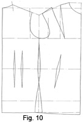Basis for Single-seam Coat (Fig. 10)
The basis for this style is identical in respect of constructional points with Fig. 7, with the exception of darts in the back to take the place of panel or sidebody seams.
This basis is usually adapted to the cutting of sports jackets, blazers, and cardigans, so there is not the need for such a degree of close fit, and we do not take the standard quantity of suppression from the back in the darts.
The back suppression may be reduced by ½ to ¾ of an inch as desired. The front suppression is left unchanged, for women like a clean-fitting coat at the front under the bust.
Two darts placed close together at the back waist displace the surplus material.
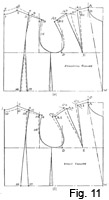Variation from the Normal for Erect and Stooping Figures (Fig. 11)
A measure of the success a cutter achieves is the ability to alter his system to fit all the multitudinous shapes and sizes of customers who pass through his hands and under his tape.
The knowledge of a system in itself is of small value in the hurly-burly of active cutting practice; in fact, no sooner have we assimilated a normal system when we are required to ignore it or vary the procedure in dealing with a figure of disproportionate characteristics.
So in addition to our knowledge of how to cut for women of proportionate development, we must also be armed with a rational and systematic method for meeting the needs of the awkward figures of people who depend on our cutting skill to minimize or disguise their peculiarities of build.
The two most common alterations are those for stooping and erect carriage. Though not so pronounced in a woman as a man, the stooping attitude nevertheless presents difficulties to the cutter, as the "round" is more a case of very prominent blades than a general curvature.
The erect figure is a different proposition. Here we have the prominence of the bust to take into account, and an increase in bust development coincides with an extra erectness of carriage as a result. The consequent treatment for one alteration has the effect of likewise proving judicious for the other.
As a guide to the extent of variation from the normal basis for either stooping or erect figures, it is absolutely essential that the front waist measure is taken with the utmost accuracy. Without this valuable check measure, we can only estimate the variation and alteration required by a close study of the figure while measuring.
The Stooping Figure
The chief characteristics of this type of figure are a wider back stretch than normal, a correspondingly narrower front width across the chest, and prominent shoulder bones at the front of the scye.
We will work on the basis draft for a 34-inch bust for ease of calculation, as the same principles apply to larger or smaller sizes.
Apply the front waist measure to B1 from W, less the width of back neck 1 to 2. The discrepancy from normal indicates the amount of shortness in the front depth measure, and the neck point is lowered from A to B by this amount. It will be noted that the neck point remains in the same vertical line as the normal one. The neck size from which the neck point is calculated remains constant in spite of the change of figure attitude; therefore, the location of the neck point from the centre front line remains constant at one-sixth of the scale.
Figures of this type are flat on the chest and usually undeveloped in the bust, requiring a forward scye and less provision of contour capacity for the bust prominence. The quantity taken out of the bust dart decreases for a stooping figure by virtue of the shallower bust prominence; therefore, the neck point that governs the bust provision A1 is closed forward from A1 to B1, equal to the amount B is lowered below A. A decreased quantity, B1 to B, is then taken out of the bust dart from B1 to B3, pivoted from E. Check up the shoulder width from B1 to B2 and reshape the scye, advancing ¼ inch in front of the normal run.
The reduction of the quantity taken out of the bust dart also provides for ease over the shoulder point in front by passing material back from the neck point.
The back is treated in the following manner. Increase the depth of the scye at 5 and 6 from1 and 2, by the difference shown between the normal and stooping waist lengths plus ¼ inch, i.e. ¾ inch increase.
- 8 from 7 = ¾ inch.
- 9 from 4 = ½ inch.
- 7 from 3 = from 6 to 2 less ¼ inch.
- 8 from 7 = the amount of disproportion A to B plus ¼ inch which is the normal quantity taken out of the back panel at 3.
Shape the back scye run as shown, increasing the back width by approximately 3/8 inch or to a special measure taken at 15. It is not always advisable to reduce the waist suppression at the back waist for a stooping figure, as a close fit in this section only accentuates the "round," and as our mission is to endeavour to minimize or disguise the deformity, the back suppression may be decreased at 17 and 18 by ¼ inch of each panel.
This is the basis method of altering from the normal for a stooping figure. If the front-waist measure is not taken or is thought to be inaccurate, the difference must be estimated and the alteration to the pattern made in a manner identical with the above method.
The Erect Figure
This type is a combination of an erect attitude of figure and development of the bust prominence. The characteristics of the figure attitude are the inclination to walk with the shoulder blades held well back, a narrow back width and a hollow back waist.
Coats cut on a normal basis invariably have folds of surplus material in the hollow of the back waist, with diagonal creases from the side waist to the bust prominence and front of the scye. An excess of material in the back waist is caused by, primarily, too long a back balance and, secondly, too short a front depth factor. Consequently, as the coat on the figure takes up the extra front depth to compensate for the erect attitude, the side waist is pulled upwards out of position and with it the back waist.
The measure from the nape of the neck to the front waist will delineate the increase of front depth over the front depth of a normal figure, for, no matter whether the waist line is placed high or low, the increase will be reflected in the difference of the front balance.
From the front waist balance measure, the amount of erectness is estimated as ¾ inch.
In Fig. 11 (b) the front neck point A is raised to C by the amount of erectness, ¾ inch, the neck point being kept in the same vertical line of one-sixth of the scale from the centre line.
The provision for the increase of bust prominence is greater than normal owing to the erect attitude; therefore, the shoulder dart must be enlarged to provide for the extra breast shape.
Sweep back from A1 to C1 equal to A to C, pivoting from point D. The distance from C to C1 therefore becoming greater, this creates the extra bust capacity. Make up the shoulder width from C1 to C2 when the back section has been reconstructed. By increasing the quantity taken out of the bust dart, which might be termed "crookening" the neck point, we keep the front of the scye clean and snug to the figure.
At the back and shoulder, 10 and 11 from 1 and 2 are equal to the amount shown at C to A less ¼ inch. The back panel seam is overlapped at 12 to 13 by ¼ inch instead of ¼ inch being taken out as normally. Consequently, the back shoulder point is narrowed ½ inch from 4 to 14 to counteract the effect of overlapping the shoulder seams ½ inch. A reduction of ¼ inch of back width takes place at 16, in accordance with the relocation of the shoulder end and the requirements of the figure.
The back suppression is not altered, as the normal amount is ample for the figure requirements; the shortening of the back depth and the lengthening of the front eliminate the excess of material in the back waist hollow.
It is always advisable when altering for disproportionate figures to err on the safe side and not make drastic alterations from the normal. The degree of perfection we can instill into our cutting is necessarily governed by discernment and knowledge of the requirements of varying figures coupled with the practical supplementary knowledge of correct measurements.
The ability to sum up a figure while measuring and mentally decide and allocate the depth and width quantities comes from constant practice and cannot be acquired in a short while, but we can always try to take measures as correctly as possible.
We must not, however, become a slave to the inch-tape. We need always to keep our sense of the proportionate values of the human figure, and if our tape-measure registers a quantity which better judgment based upon experience regards with suspicion it is better to doubt the infallibility of the tape-measure and let our experience take command.
Accurate direct measures are a great help and guide to cutters if implicit faith is not placed in them and their use is tempered with judgment. The human figure is not a body of definite regular shape, so that measures mechanically recorded at one moment may be disproved by similar measures taken when the body is in a different attitude.
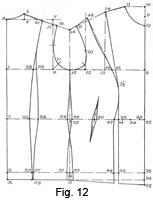Basis of Provision for Bust Development (Fig. 12)
The basis draft for dealing with figures of more than proportionate development of bust prominence is based upon the normal 34-inch bust figure of which the measurements were given at the commencement of the chapter. For the sake of convenience they are enumerated again, together with the additional measurements necessary—
- Chest = 32 inches.
- Bust = 34 inches.
- Waist length =15 inches.
- Full length = 24 inches.
- Front-waist measure = 19½ inches.
- Half-back width = 6½ inches.
- Waist = 27 inches.
- Hips = 38 inches.
- Normal height = 5 feet.
- Working scale = half the bust size = 17 inches.
These measures are those of a perfectly proportioned figure. A figure, however, may conform to the 34-inch bust standard at the back depth and width, yet the bust may be so developed that the over-bust measure registers 2 to 3 inches more. Women of this build and type are by no means rare; especially are they more prevalent in working-class districts, where practically every woman from her early childhood wears some form of corset, with the consequence that the bust is held firmly up in position and shape on the figure. The waist is usually thicker: through in proportion, while corseting keeps the hip size in conformity, with the normal bust size.
So for the purpose of the examples we will use the following measures—
- Chest = 32 inches.
- Bust = 34 inches (normal 2 inches of increase over the chest measure).
- Bust = 37 inches (developed from 34-inch bust plus 3 inches of increase).
- Waist =28 inches.
- Hips =38 inches.
The other measures are as for the proportionate figure, with the exception of the front-waist measure, in which an increase of ½ inch is recorded.
This type is also well-developed in the region of the biceps muscles, and requires a slightly easier scye than for a normal figure.
The method is based upon the fact that a figure type of this build will require a back balance equal to a normal 34-inch bust figure and a front balance and depth equal to the increased bust size of 37 inches. Therefore, we base our system on two scales, 17 for the back balance and depth and one-third of a 37-inch bust plus 6 inches for the front depth and balance, i.e. scale 18 ¼.
Obviously the increase does not all take place at the front at the bust prominence. The figure is generally thicker under the arms to the waist, and so it is not logical to add all the difference from the normal on the fronts as in the case of some methods. The need for an easier scye takes up some of the increase, and we can safely say that the enlargement is from the underarm seam forward to the centre front.
The drafting of the system will be described in full to show the variations from the normal draft.
- Scale for the back depth =17 inches.
- Scale for the front depth = 18 ¼ inches.
Draw a line from X to X, the full length of coat.
- 1 from X = one-third of the scale (17 inches) plus 1¾ inches = 7½ inches.
- 2 from X = the length to waist =15 inches.
- 3 from 2 = 8 inches for the hip level.
- 4 from X = one-sixth of the scale (17 inches) less ½ inch.
- 5 from 4 = 1 inch.
- Shape the back neck curve from 5 to X.
- 6 from 1 = the half-back width plus a ¼ inch seam.
- Square up from 6 to 7 on the line square out from X.
- 8 from 1 = half the bust girth plus 2 inches.
- 9 from 8 = one-third of the front balance scale (18¼ inches) plus 1¾ inches.
- This distance is at variance with the normal draft in which this quantity is made as X to 1. The increased front balance length is therefore provided by the use of the larger scale.
- 10 from 9 = one-twelfth of the scale (18¼ inches).
- 11 to 10 = one-sixth of the scale (18¼ inches).
- 12 from 8 = the across-chest width.
As the bust girth has increased to 37 inches from the normal proportion of 34 inches to 32 inches chest girth, the increase in the across-chest width must be in excess of the normal width for the 37-inch bust circumference since the width of back and scye remains proportionate for the 34-inch bust circumference. Therefore, the 3 inches of disproportion are mainly at the front, though not all this quantity is added to the across-chest width. Three inches in the overall girth indicates 1½ inches on the draft, and this quantity added to the normal across-chest width for the 34-inch bust would give an increased across-chest width of 9¼ inches (7¾ plus 1½ inches), equal to the across-chest width for a 40-inch bust figure. The increase is not as great as this, however, and this quantity is calculated as follows.
Compare the normal across-chest width for a 34-inch bust girth with the normal for a 37-inch bust girth, and find the difference between the two widths.
- Across-chest width for a 37-inch bust = 8½ inches.
- Across-chest width for a 34-inch bust = 7¾ inches.
- Difference = ¾ inch.
Two-thirds of the difference between the two across-chest widths is added to the across-chest width for a normal 37-inch bust girth to give an across-chest width equal to 8½ inches plus ½ inch, i.e. 9 inches, which indicates that the degree of prominence at the bust in front is equal to the normal development for a 39-inch bust figure.
- Therefore, 12 from 8, the across-chest width = 9 inches.
- 13 from 12 = one-sixth of the scale (17 inches).
- 14 from 13 = 8 to 10 less ½ inch.
- 15 is located midway of 6 to 12.
- 16 from 15 = one-third of the scale (17 inches) plus ¼ inch.
- Join 14 to 16 for the front shoulder angle or slope.
- Join 5 to 16 for the back shoulder slope.
- 17 is located where the line squared up from 6 is intersected by the line from 16 to 5.
- 18 from 17 = ½ inch.
- Shape the back shoulder seam from 18 to 5 as shown.
- 19 from 14 = 5 to 18 less ½ inch to find the front shoulder seam width.
- 20 from 12 = one-sixth of the scale for the front of scye shape.
- 21 from 6 = 1¼ inches.
- Complete the shape of the scye from 19 to 20, 15, 21, and 18.
- Square from 15 to 25, 26, and 27.
Now we come to the question of the hip overlap when the bust girth increases disproportionately at the front.
As the system is drafted to a 37-inch bust girth on the breast line, the hip overlap applied in the usual proportion of 1½ inches at the sideseams would give an increase of hip girth to 41 inches in proportion to a 37-inch bust.
The hip girth does not show any increase in proportion to the bust increase and remains constant to the proportion for a 34-inch bust; therefore, as the draft is based on a 37-inch bust, there will be 3 inches of surplus hip size to be reduced, i.e. 1½ inches on the draft.
- Proportionate hip size for a 37-inch bust = 41 inches.
- Proportionate hip size for a 34-inch bust =38 inches.
- Difference = 3 inches.
The principle is to compare the actual hip size with the proportionate measurement for the increased bust size to find the quantity to be reduced, or, in rare instances, to be added. In this instance, as stated, there are 3 inches or 1½ inches on the draft to be reduced.
The positions where the reduction takes place to the greatest extent are at the fronts, as it is understandable that an increase in the bust prominence does not extend below to the waist and the hips. Therefore, the hip size is reduced by the difference between the normal and increased across-chest widths, in this instance 8½ inches less 7¾ inches, or ¾ inch. It is not advisable to reduce the hip size by the extreme difference between the across-chest widths of 1 ¼ inches, as this would unduly stress the bust prominence and drag the fronts back in wear.
At the front panel, reduce ¾ inch from the surplus hips quantity of 1½ inches; the remaining ¾ inch is reduced equally from the sideseam, as the increase in the draft size takes place from this point towards the fronts and not in the back section.
To give another practical example of the principle of applying hip overlap when dealing with an increase of bust prominence disproportionate from. normal, the author has cut garments for a woman who is extremely well-developed in the bust and very slim in comparison round the hips. Her measures are unique, 40-inch chest, 46-inch bust, and 42 inches round the hips, surely a good enough example of disproportion anyone could wish for.
To draft, working on the principles described previously, we commence by comparing the chest girth of 40 inches with a proportionate bust size of 46 inches. This indicates an increase of bust prominence of 4 inches, the difference between a 42-inch normal bust and 46 inches actual measurement.
The proportionate hip girth for a 42-inch bust would be 46 inches, and for a 46-inch bust the hips would measure 50 inches. Therefore, there is a decrease in the hip size of 4 inches for the normal 42-inch bust girth, and no less than 8 inches in comparison with the proportionate hip girth for a 46-inch bust figure.
To make the hip size correct for the normal 42-inch bust, the draft at the hips must be reduced 4 inches in all or 2 inches on the half. Here we have an instance of disproportionate hips in comparison with the bust, and the reduction of 2 inches takes place at the sideseams and back panel, as the decrease of girth is general and not confined to one particular section. So instead of the usual sideseam overlap of 1½ inches, this is reduced by two-thirds of the surplus hip size, i.e. 1¼ inches approximately, and the sideseam overlap becomes a bare ¼ inch instead of 1½ inches, while the remaining ¾ inch of surplus is taken from the back panel seams.
This makes the hip girth equal to the actual size for the proportionate bust size of 42 inches, but we now have to take into account the increase in the bust size to 46 inches, which indicates that the draft has an overall increase of size by 2 inches, the difference between the two half-bust measurements. Therefore, there is the necessity for another 2 inches of reduction of the hip size.
Working on the principles described for allocating the degree of increase in the across-chest width, we have the following calculations—
- Normal across-chest width for a 46-inch bust = 10¾ inches.
- Normal across-chest width for a 42-inch bust = 9¾ inches.
- Difference = 1 inch.
Two-thirds of the difference is added to the across-chest width for a 46-inch bust to give an across-chest width of 10 ¾ of inches plus 5/8 inch, the total being 11 3/8 inches, an increase of 1 3/8 inches on the across-chest width for the 42-inch bust draft on which the hip size has been corrected.
Half of this quantity is reduced from the front panel and the remainder from the sideseams. At the sideseams there is now a suppression of 5/8 inch, calculated by the overlap of ¼ inch being reduced by 7/8 inch.
- Proportionate hip girth for a 46-inch bust = 50 inches.
- Proportionate hip girth for a 42-inch bust = 46 inches.
- Difference = 4 inches.
The total decrease of hip girth equals 8 inches or 4 inches on the draft, which is reduced by 7/8 inch from the front panel, ¾ inch from the back panel, and the remaining 2 1/8 inches from the sideseams. At the back panel, the total suppression equals 1 inch, as on the basis draft ¼ inch suppression is usually shown at this point.
This is a very extreme instance and needs special treatment, but when the bust girth shows a normal increase over the chest measurement and the hips are disproportionately smaller, the decrease should be reduced at the back and sideseams only.
To continue with the draft—
- 28 from 1 = 4¼ inches.
- 29 from 3 = 4 inches.
- 30 from 2 = 3½ inches.
- 31 from 5 = 3 inches, or the distance from 14 to 11.
- 32 from 28 = ½ inch.
The waist suppression is calculated as follows—
- Bust measurement = 37 inches.
- Waist measurement = 29 inches.
- Difference = 8 inches.
On the draft, half the bust measurement plus 2 inches equals 20½ inches and half the waist measurement plus 2¾ inches equals 17¼ inches, giving a difference of 3¼ inches to be taken out in the suppressions.
The fronts have increased 1¼ inches from normal on the draft and this increase is not connected with the waist, so that 1¼ inches must be reduced from the front waist before the proportion of suppression at the back and front waist is calculated.
- Measure from 2 to 33; the half-waist measurement plus 2¾ inches equals 17¼ inches.
- 34 from 33 = the increase of front width = 1¼ inches.
- The surplus quantity indicated from 34 to 22 is to be reduced as suppression.
- 35 from 34 = the back waist suppression = two-thirds of the surplus from 34 to 22.
- The front-waist suppression, irrespective of the 1¼ inches reduction of width, is indicated by the remaining one-third from 35 to 22.
- 36 from 30 = the quantity indicated from 34 to 35.
- 37 from 29 = ¼ inch.
- Shape the back panel seam from 31 to 32, 36 and 37 to 38.
- 39 from 25 = 3/8 inch sideseam suppression.
- 40 from 25 = the above quantity.
- Overlap at the sideseams equal to 1 ½ inches normal overlap less ¾ inch of disproportion as previously described.
- Complete the shape of sideseams from 15 to 39 and 42 and 15 to 40 and 41.
- 43 is half the distance from 12 to 8 for the front panel seam run.
- 44 from 22 = 4 inches.
- 45 from 23 = 4 inches.
- These distances are comparative and subject to the needs of style and should not be systematized.
- Shape the front panel seam from 14 to 43, 44 and 45 to the bottom edge line.
- 46 from 45 = the front panel seam reduction at the hip level, equal to half the front width increase from normal = ¾ inch.
- 47 from 44 = half the quantity registered from 33 to 34 as it is not advisable to shape the waist too much below the breast prominence.
- Pivot from 43 to sweep 48 from 14 equal to the front shoulder dart width indicated from 14 to 11.
- 49 from 43 = half the total front width increase (¾ inch).
- Shape the front panel seam from 48 through 49 to 2½ inches below the breast line and then shape out the waist suppression to 47 and down to 46 and the bottom edge run.
- Reduce the front waist suppression quantity indicated from 35 to 22 from the dart at 50.
- 51 from 10 = one-sixth of the scale for the gorge run; shape from 51 to 11.
- Lower the front edge ¾ inch at 52 from 24 and shape to the sideseam to complete the basis draft illustrating the principles of drafting patterns for an increase of bust prominence on the normal proportion.
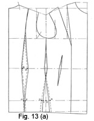Location of Hip Size and Waist Increment (Fig. 13)
Figure 13(a)—Location of the Hip Size and Waist Increment
All women are not of proportionate build, and the majority are developed more at the hip section than elsewhere. The type of figure with an over-development of the hip girth can only be fitted by a ready-made coat or costume with a size larger hip girth, with the result that the bust and waist girths are much too large in proportion.
Though of later years the wholesalers have improved the range of fittings available, women of this type are very good clients of the bespoke tailor and dressmaker.
The method of allocating the increase of hip size is a simple procedure. It has been found that, for a proportionate increase in the hip over the bust of 4 inches, 1½ inches of overlap is required at the sideseam.
We then compare the increase in hip quantity with the bust size, and half the difference shown over the usual 4 inches of increase is allocated on the draft. It may be safely assumed that the increase will be more at the sides than the back, so two-thirds of the difference is placed on the sideseams and one-third at the back panel.
With a 34-inch bust figure an increase of anything up to 7 inches would be quite feasible, which would mean an increase of 3 inches in total circumference and 1½ inches on the draft.
This difference is allocated by adding two-thirds of the increase at 1 to 3 and 2 to 4, or ½ inch on each sideseam as shown.
The remaining one-third is added to the back panels, at 5 and 6, resulting in a ¼ inch of overlap instead of the usual normal ¼ inch of suppression.
We can also be very certain there will be a slight general thickening and increase in waist girth, so this must be taken into account.
An increase in waist size of 2 inches is suggested for the purpose of illustrating the adjustment of the system.
Calculate as described—
- Half bust 17 plus 2 inches = 19 inches
- Half waist 14½ plus 2¾ inches = 17¼ inches.
- Difference = 1¾ inches.
Therefore, the back suppression at 8 to 9 is made two-thirds of 1¾ inches, i.e. 1¼ inches approximately. The front dart is reduced by ½ inch to suppress ½ inch instead of 1 inch normally.
A formula for the increase or decrease of waist quantity may be systematized as follows. For every 2 inches increase in waist size reduce the back panels by two-thirds and the front dart by one-third of the half difference on the draft, and for every 2 inches of decrease in waist quantity, suppress two-thirds of the difference at the back panel and one-third at the front dart.
The principles of adding or decreasing-the quantities of hip overlap are identical; for every difference, either large or small, the ratio of two-thirds of the amount at the sideseam and one-third at the back panels holds good.
An example is Fig. 13 (b) which is drafted to a 34-inch bust, a 25-inch waist, and 35-inch hips.
- Difference from normal waist = 2 inches.
- Difference from normal hip = 2 inches.
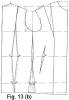Figure 13(b)—Location of the Hip Size and Waist Increment
On the draft half of these two quantities has to be taken into account.
One-third of the difference is taken out equally at 5 and 6, and two-thirds of the difference is reduced from the sideseams at 3 and 4 as shown.
Of the decrease in waist size, two-thirds is taken out at 7 and 8, and the remaining one-third from the front dart at 9. The author does not believe in reducing waist size from the front panel seam unless the figure is prominent in the bust, as there is a tendency to distort the balance of the fronts by so doing.
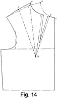The Shoulder Dart and Provision for Bust Contour (Fig. 14)
In the basis drafts up till now a dart through the shoulders has been cited as correct for the provision of contour capacity to cover the bust prominence. This is the position by which best results are obtained in the fitting qualities, as the location is scientifically correct, but it is not always convenient or in accordance with the design always to use the dart through the shoulder. In some instances the customer's wishes are against it; therefore, we must find some other location for the dart so as to provide an equal amount of bust contour shape.
To draft a ladies' coat without a dart for bust provision is obviously incorrect, but a transference of the dart to another line of approach is quite permissible. There may be a dart under the lapel in the neck run, or, alternatively, a dart under the scye down the sideseam level with the bust prominence. This dart is a favourite with dressmakers and is very efficient in practice. It is a pity that, owing to prejudice, tailors' cutters do not make more use of it, for the under dart provides contour shape in a more effective way than the gorge dart. It is also of great use when cutting for women of prominent bust, for an additional quantity of length may be allowed over the bust from the bottom of the coat by adding the extra amount at the hem and reducing the sideseam to correct length by taking out a dart under the bust.
To obtain the variation of the shoulder dart to a position under the lapel or in the sideseam under the scye, manipulation is necessary as is shown in Figs. 14 and 15.
In Fig. 14, the normal bust dart is shown from 1 and 2 to 3 in dash lines; 3 is the termination of the shoulder dart at the bust prominence; 5 and 6 is the run of the neck curve.
To obtain the lapel dart, split through the pattern from 4, which is 1 inch back from 5, to 3.
Close out the shoulder dart from 1 to 2 so that the remodelled shoulder line is as indicated by the solid line running from 6 through 2.
This operation will have the effect of opening 4 to 7 as indicated.
Mark a ¼-inch seam inside the line from 7 to 3 and 4 to 3, as illustrated on the diagram, to terminate at point 8.
When this adjustment is being made on an actual pattern the crease line of lapels must be marked to correspond, so that when the dart is sewn out, the crease line is in one straight line.
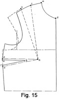The Underarm Dart (Fig. 15)
Fig. 15 illustrates the treatment of the pattern for obtaining the dart for bust provision under the arm in the sideseam, instead of either in the shoulder or under the lapel; 1 and 2 show the original shoulder dart.
At a point approximately 3 inches down from the base of the scye, the pattern is cut through to point 3, the termination of the shoulder dart. The shoulder dart 1 to 2 is then closed out to open 4 to 5. Mark two ¼-inch seams inside 5 to 3 and 4 to 3 to point 8 as shown. This underarm dart when sewn out should be tapered off nicely.
A dart in this position may be very useful when the design does not permit for either a shoulder dart or a gorge dart as would be the case when cutting a garment that buttons right up to the throat, as the lancer-fronted "Guards" styles that have been in vogue.
The design may permit a transference of the dart to any seam that runs near or over the bust prominence with equal beneficial effect. Experience will, be a guide to the many methods of arranging the dart to suit the style, but it must always be kept in mind that a dart for provision of material to cover the contour of the bust is as important as allowance to be made for the increase of hip girth over the bust circumference.
The bust is a more localized and defined prominence than any other section of the figure, and adjustment of material in accordance with the demands of this factor is very important.
Without the necessary contour shape, the garment on the figure will show all those symptoms of a misfit that are familiar to us all. For when the bust prominence takes up the needed material for adequate covering we are treated to the spectacle of gaping lapels, a foul front of scye, and diagonal creases from the side waist to the bust point. These are all old acquaintances, forcing their unwelcome attentions upon us, because we have failed in our objective of providing sufficient material for adequate covering of the bust form, irrespective of any other section of the body. We are very careful to add a round of seam for the hip shape, realizing that the increase demands a sufficiency of covering, yet we often fail to meet the demands of the bust for contour shape and size.
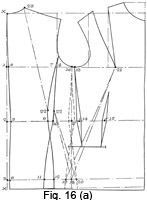Basis for Sideseam Coat (Fig. 16 (a))
This style closely resembles a gentleman's lounge jacket, and, though at first glance it appears comparatively easy to cut, it is quite the reverse in practice. The same apparent defects are manifest in wear as those in the masculine counterpart. Always there are symptoms of a short back depth or balance, the coat being dragged away from the fronts towards the side and back. The fronts wing away, and a feeling of tightness over the hip is apparent, though there is ample provision made for the hip girth in the way of material at the sides.
A customary remedy is to lengthen the back balance by passing the back up on the sideseams ½ inch or so—a seemingly logical remedy as there appears to be an obvious shortage of back balance somewhere. But the remedy fails in its objective, and instead gives, rise to another defect by causing too much material under the collar at the back.
The cause of all the trouble experienced with this style is the distribution of the hip excess quantity and overlap. It previously has been pointed out that the only logical position for the hip overlap is at the sideseam, as this is the most projecting part, but when the lounge style is cut with no sideseam under the arm, the hip overlap is moved back about 4 inches or so. The displacement of the seam causes all the defects which the lounge style shows in wear.
Examine Fig. 16 (b) and see how the transference of the hip overlap material affects the balance and provision of material at the hip section. This draft shows how a lounge style is usually drafted, but not as the author drafts it. Details of the constructional points which are involved are as follows—
- The centre back seam from 1 to 4 is ¼ inch inside line X to X.
- At the waist 5 is ½ inch from 2, and at the hip level 6 from 3 = ¼ inch.
- Shape the centre back seam from X, 4, 5, to 6 and the hem line.
- 7 from 4 = the top of the sideseam = 6 ½ inches.
- 8 from 7 = ¼ inch out, as in the system ½ inch is lost under the blades and we have already suppressed the back seam ¼ inch at 4 from 1.
- 9 from 5 = 5 ¼ inches
- 12 from 6 = 6 inches.
- The back sideseam is shaped as shown on the draft from 7, 9 to 12 and the hem line.
- At 10 from 9, the waist suppression of 1 inch to 1 ¼ inches is taken, depending on the distance the back seam is indented at 2 to 5. This quantity of suppression is the amount that is usually taken out of the panel or sidebody seams.
- The hip overlap of 1 ¼ inches is placed at 12 from 11 and the sideseam is reshaped from 8, 10 to 11.
- A ¾ inch underarm dart is placed at 13 to 14 for the underarm suppression, with the customary front cut at 15.
- Points 16, 17, 18, 19, and 20 indicate the original under-seam position.
- Now it must be obvious from the draft that if the distance from 21 to 19 is correct and unalterable for the underarm seam style and scientifically in agreement with the shape of the figure at this section, then 21 to 18 is insufficient by the amount 19 to 18 when ,the sideseam is moved back from 11 to 12. It is of no importance if the hip overlap is placed at 11 and 12 and is ample to measure, for the material is needed at 19 and 18, and there would always be a shortage of length from the bust prominence at 21 to 18.
- Similarly from 20, 22 to 23 is obviously longer than 18, 22 to 23, so the apparent shortness of back balance becomes a fact.
The provision for the prominence of the hip is in the wrong place, and consequently the coat on the wearer is dragging material from the back and front to make up the deficiency. Hip overlap placed at the back is useless as a means of hip provision and is absolutely at variance with the shape of the figure at this part. This is why the author always advocates an underseam and sidebody in a ladies' coat in preference to the seam placement further back.
But as we all occasionally meet the woman who desires a jacket "just like my husband's," then we must evolve a system that is scientifically correct in the transference of the hip provision on the draft.
The point we have to keep in mind is that the hip overlap must be at the side, no matter whether the style is an underseam or back seam style.
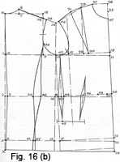Basis for Lounge Coat (Fig. 16 (b)).
Fig. 16 (b) illustrates how the author drafts this style.
Measures are as for the normal 34-inch bust proportions.
Draw line X to X.
- 1 from X = one-third of the scale plus 1¾ inches.
- 2 from X = the natural waist length.
- 3 from 2 = 8 inches below for the hip line.
- 4 from 1 = ¼ inch.
- 5 from 2 = ½ inch.
- 6 from 3 = ¼ inch.
- Shape the centre seam at the back from X, 4 to 5 and 6.
- The infinitesimal suppression taken from the centre seam does not materially affect the balance of the back, but instead provides for a slight amount of needed extra length at the sideseam.
- 7 from X = one-sixth of the scale less ¼ inch.
- 8 from 7 = 1 inch. Shape the neck curve from 8 to X.
- 9 from 1 = the half-back width plus ¼ inch.
- Square up from 9 to 10 as shown.
- 11 from 1 = the half-bust measure plus 2 inches.
- 12 from 11 = half of the scale less ¾ inch.
- 13 is midway 12 to 9.
- 14 from 13 = one-third of the scale plus ¼ inch.
Now we come to the decided change in constructional points from the basis drafts. It has been previously stated that the hip overlap must be always placed at the sideseams only; therefore, when drafting this style, a wedge is inserted into the forepart at the usual position of the underseam equal to the amount of required hip increase of size.
- Square down from 13 to 16 on the waist line and 15 on the hip line.
- 17 from 15 = the difference between the half-bust and the half-hip measures less 1 inch.
It is customary when drafting from the basis method to only subtract ½ inch from this difference, but in this case, in order that the underarm dart does not become of unwieldy proportions for making up, the wedge inserted under the arm which represents the customary hip overlap is reduced in quantity as the ½ inch allowance for seams on the original underarm seams is not required for this style.
- Line from 13 to 18 and 17.
- Square from the construction line 13, 18 to 17 the new breast, waist and hip lines.
- 19 from 4 = 4 to 11.
- Square down from 19 to 20 and 21.
- 23 and 24 are squared from 6 and X.
- 25 from 19 = X to 1.
- 26 from 25 = one-twelfth of the scale.
- 27 from 26 = one-sixth of the scale.
- 28 squared from line 13 to 19 = one-sixth of the scale.
- 29 from 28 = 19 to 26 less ½ inch.
- Join 29 to 14 and 14 to 8.
- 30 is midway 19 to 12.
- Sweep from 29 to 31 equal to 29 to 27, pivoting from 30.
- 32 is located on the line 9 to 10, intersected by line 14 to 8.
- 33 from 32 = ½ inch.
- Shape the back shoulder seam to 8 from 33, hollowing ¼ inch below the line.
- 34 from 29 = 8 to 33 less ½ inch.
- Shape the scye as shown on the draft.
- 35 up from 9 = 2 inches for the top of the sideseam.
- 36 from 5 = 5 inches or one-third of the scale less ¾ inch.
- 37 from 6 = 5 to 36 plus ½ inch.
- Measure from 2 to 38 the half-waist measurement plus 2¾ inches plus the quantity shown from 16 to 18, which increases the waist size owing to the wedging of the hip overlap into the sideseam.
- 39 from 38 = two-thirds of the waist surplus shown from 38 to 20.
- 40 from 36 = the back-waist suppression less the quantity taken from the centre back seam from 5 to 2.
- Overlap the sideseam ¼ inch at 41 from 37 and shape from 35 to 40 and 41.
- 42 from 13 = 1 inch forward for the position of the underarm dart.
- This may be placed further back at will, but for the purpose of clarity in this draft it is placed as stated.
- 43 from 18 = 1 inch.
- At the waist, reduce the usual ¾ inch waist suppression plus the quantity added from 16 to 18 as allowed for in the measuring up of the waist size.
- Shape out the dart 12 inches in length from 42 to 45, reducing by the above quantity, viz. 1¼ inches.
- The front-waist dart takes the suppression, quantity indicated from 39 to 20. Shape the dart 8 inches in length as illustrated.
- 47 from 26 = one-sixth of the scale.
- Shape the gorge run from 47 to 27.
The balance of the garment is not affected by the apparent increase of waist suppression as the operation of inserting the wedge is in practice identical with the overlapping of the sideseams at the hip section on the basis draft.
The act of inserting the hip overlap in the pattern and re-squaring the breast, waist and hip balance lines is scientifically and practically the only method of drafting this style to provide material in the correct position for covering the prominent part of the hips at the side. As will be illustrated farther on in this book, if we model this style in material on the stand, there is a distinct upward "break" in the breast line at a point forward from the centre of the scye, which proves that this draft is basically sound. Actually, the treatment of the draft is based on the sidebody basis with the sideseams overlapped two seams on the hips instead of the usual 1½ inches overlap.